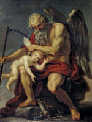

Кронос, у давньогрецькій міфології, був одним з титанів, які народилися від шлюбу бога неба Урана і богині землі Геї. Він піддався на вмовляння матері і оскопив свого батька Урана, щоб припинити нескінченні народження його дітей.
Щоб уникнути повторення долі батька Кронос став ковтати всіх своїх нащадків. Але врешті-решт його дружина не витримала такого ставлення до їх потомству і дала йому проковтнути камінь замість новонародженого.
Рея сховала сина, Зевса, на острові Крит, де він і виріс, вигодуваний божественної козою Амалфея. Його охороняли курети - воїни, які заглушали плач Зевса ударами в щити, щоб Кронос не почув.
Змужнівши, Зевс скинув свого батька з трону, змусив його забрати своїх братів і сестер з утроби і після тривалої війни зайняв його місце на світлому Олімпі, серед сонму богів. Так Кронос був покараний за свою зраду.
У римській міфології Кронос (Хроос - "час") відомий як Сатурн - символ невблаганного часу. У Стародавньому Римі богу Кроносу присвячували свята - сатурналії, під час яких всі багаті люди змінювалися зі своїми слугами обов'язками і починалися веселощі, супроводжуване рясними випивкою.